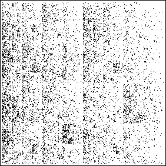

|
|
 |
| CATG picture |
|
Whole text (WT) picture |
|
| Here is the delicate question. |
| * The CATG picture is driven by a subsequence of the sequence driving
the WT picture, so shouldn't the CATG picture be a subset of the WT picture? |
| Examining the lower right corners, it is clear this is not
true. This question has two answers, one obvious, one more subtle. |
| The obvious answer is, "Look at the bins." For the WT picture, every c,
a, and g yield an application of T1, so there should be no relation
between the pictures. |
| The subtle answer is, "Even if the bins of the WT picture were changed so
c is in bin 1, a in bin 2, t in bin 3, and g in bin 4, the CATG picture
need not be a subset of the WT picture because the order in which the Ti are
applied will be different in the two pictures." |
| More generally, after converting to the driving sequence of four symbols, |
| * a subsequence need not produce a picture that is a subset of the
original picture. |
| For example, suppose the original sequence begins 121..., and
has no consecutive 1s. |
| Further, suppose the subsequence is made by deleting the
second, fourth, sixth, etc., terms of the original sequence. |
| The IFS driven by the
original sequence has no points in the subsquare with address 11, while the IFS
driven by the subsequence does have a point in the 11 subsquare. |